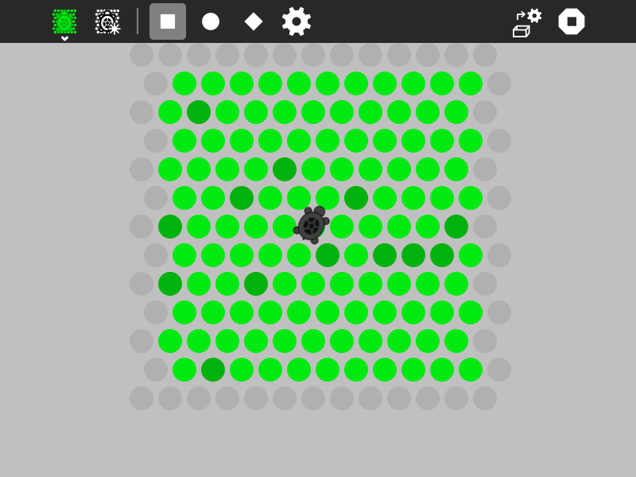
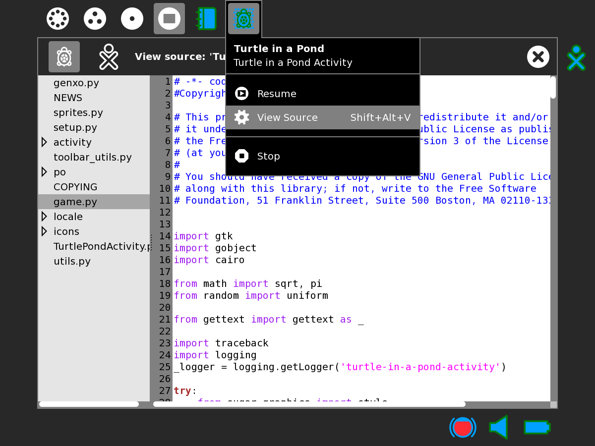

Turtle in a Pond¶
Turtle in a Pond is a strategy game. The goal is to surround the turtle before it runs off the screen. (Turtle in a Pond was inspired by the game Circle the Cat.)


How to play Turtle in a Pond¶
Click on the dots to keep the turtle from escaping.
|
The turtle is captured |
The turtle escaped |


Did you know that:
The Toolbars¶
from left to right
the Activity toolbar button (shown in the open position)
the New-game button
the Beginner level (uses beginner strategy below)
the Intermediate level (uses intermediate strategy below)
the Expert level (uses expert strategy below)
the Custom level (uses user-designed strategy below)
an area for messages
the Load-new-strategy button
the Activity stop button
Strategy¶
Cut and paste these examples into Pippy and save then to your Sugar Journal. Then use the Load-new-strategy button in the Turtle-in-a-Pond Activity to try them. They are written in Python, you can learn about Python by reading the Python Documentation
In this strategy, the turtle moves down regardless of whether the dot is open.
def _turtle_strategy(self, turtle):
turtle[1] += 1
return turtle
In this strategy, the turtle moves down until it is blocked (i.e., when the dot type is True).
def _turtle_strategy(self, turtle):
if not self._dots[self._grid_to_dot((turtle[0], turtle[1]+1))].type:
turtle[1] += 1
return turtle
In this strategy, the turtle searches for an open dot, looking clockwise.
def _turtle_strategy(self, turtle):
dots = self._surrounding_dots(turtle)
for i in range(6): # search for an opening
if not self._dots[dots[i]].type:
return self._dot_to_grid(dots[i])
return turtle
In this version, the turtle orientation is set as well.
def _turtle_strategy(self, turtle):
dots = self._surrounding_dots(turtle)
for i in range(6): # search for an opening
if not self._dots[dots[i]].type:
self._orientation = i
return self._dot_to_grid(dots[i])
return turtle
The turtle choose a random direction and goes there if the dot is open. (This is the beginner strategy.)
def _turtle_strategy(self, turtle):
dots = self._surrounding_dots(turtle)
n = int(uniform(0, 6)) # choose a random orientation
for i in range(6): # search for an opening
if not self._dots[dots[(i + n) % 6]].type:
self._orientation = (i + n) % 6
return self._dot_to_grid(dots[(i + n) % 6])
return turtle
In this strategy, the turtle will go off the edge if it can. (This is the intermediate strategy.)
def _turtle_strategy(self, turtle):
dots = self._surrounding_dots(turtle)
for i in range(6): # search for an edge
if self._dots[dots[i]].type is None:
self._orientation = i
return self._dot_to_grid(dots[i])
n = int(uniform(0, 6)) # choose a random orientation
for i in range(6): # search for an opening
if not self._dots[dots[(i + n) % 6]].type:
self._orientation = (i + n) % 6
return self._dot_to_grid(dots[(i + n) % 6])
return turtle
In this version, it looks for a path to the edge in the direction it was already heading.
def _turtle_strategy(self, turtle):
dots = self._surrounding_dots(turtle)
for i in range(6): # search for an edge
if self._dots[dots[i]].type is None:
self._orientation = i
return self._dot_to_grid(dots[i])
if self._daylight_ahead(turtle):
return self._dot_to_grid(dots[self._orientation])
n = int(uniform(0, 6)) # choose a random orientation
for i in range(6): # search for an opening
if not self._dots[dots[(i + n) % 6]].type:
self._orientation = (i + n) % 6
return self._dot_to_grid(dots[(i + n) % 6])
return turtle
A weighing function is used: preference is given to dots closer to the edges.
def _turtle_strategy(self, turtle):
dots_ordered_by_weight = self._ordered_weights(turtle)
if self._dots[dots_ordered_by_weight[0]].type is None:
return self._dot_to_grid(dots_ordered_by_weight[0])
elif not self._dots[dots_ordered_by_weight[0]].type:
return self._dot_to_grid(dots_ordered_by_weight[0])
else:
return turtle
This is the expert strategy.
def _turtle_strategy(self, turtle):
dots = self._surrounding_dots(turtle)
for i in range(6):
if self._dots[dots[i]].type is None:
self._orientation = i
return self._dot_to_grid(dots[i])
dots_ordered_by_weight = self._ordered_weights(turtle)
for i in range(6):
self._orientation = dots.index(dots_ordered_by_weight[i])
if self._daylight_ahead(turtle):
return self._dot_to_grid(dots[self._orientation])
n = int(uniform(0, 6))
for i in range(6):
if not self._dots[dots[(i + n) % 6]].type:
self._orientation = (i + n) % 6
return self._dot_to_grid(dots[(i + n) % 6])
self._orientation = (i + n) % 6
return turtle
The dots are stored in a 13✕13 array. Each dot has an attribute, ‘type’, that determines it status. The edges have a type=None. Occupied dots have a type=True. Unoccupied dots have a type=False.
Your strategy should start with:
def _turtle_strategy(self, turtle):
The turtle argument is a tuple containing the column and row of the current turtle position. That is, turtle[0] is the horizontal position and turtle[1] is the vertical position.
Your strategy should return a tuple containing the column and row of the new turtle position, e.g.,
return [column, row]
Resources¶
There are some resources that you can use in your program, including:
- self._surrounding_dots((column, row))
returns an array of dots surrounding a given position in the grid
- self._daylight_ahead((column, row))
returns True if there is a clear path to the edge heading in the current direction
- self._ordered_weights((column, row))
returns an array of surrounding dots ordered by their distance from the edge
- self._dots
the array of dots from which you can test the type attribute (self._dots[i].type==None → edge; self._dots[i].type==False → open; self._dots[i].type==True → blocked)
- self._orientation
you can set the orientation of your turtle by assigning a number from 0-5 (clockwise beginning with 30 degrees from north)
- self._set_label(‘your message here’)
you can write a message on the toolbar if you want to communicate what your turtle is thinking
- self._grid_to_dot((column, row))
returns the dot that is at a grid position (column, row)
- self._dot_to_grid(dot):
returns an array (column, row) representing the grid position of a dot
Digging deeper¶
To better understand how to use the above resources, view the program source. Look at game.py for code relating to game strategy. View_Source


If your Sugar distribution includes the Gnome editor GEdit, you can use it to view and edit the program source. In Terminal type
gedit
You will find the program source at
/home/olpc/Activities/TurtleinaPond.activity
See Activity_Team/Modifing_an_Activity for other methods for viewing and editing the source.
Where to get Turtle in a Pond¶
The Turtle in a Pond activity is available for download from the Sugar Activity Library: Turtle in a Pond
The source code is available on GitHub.